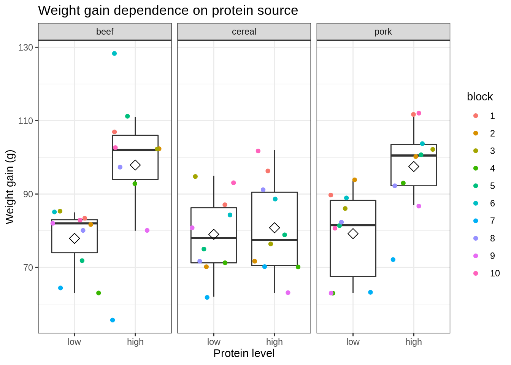
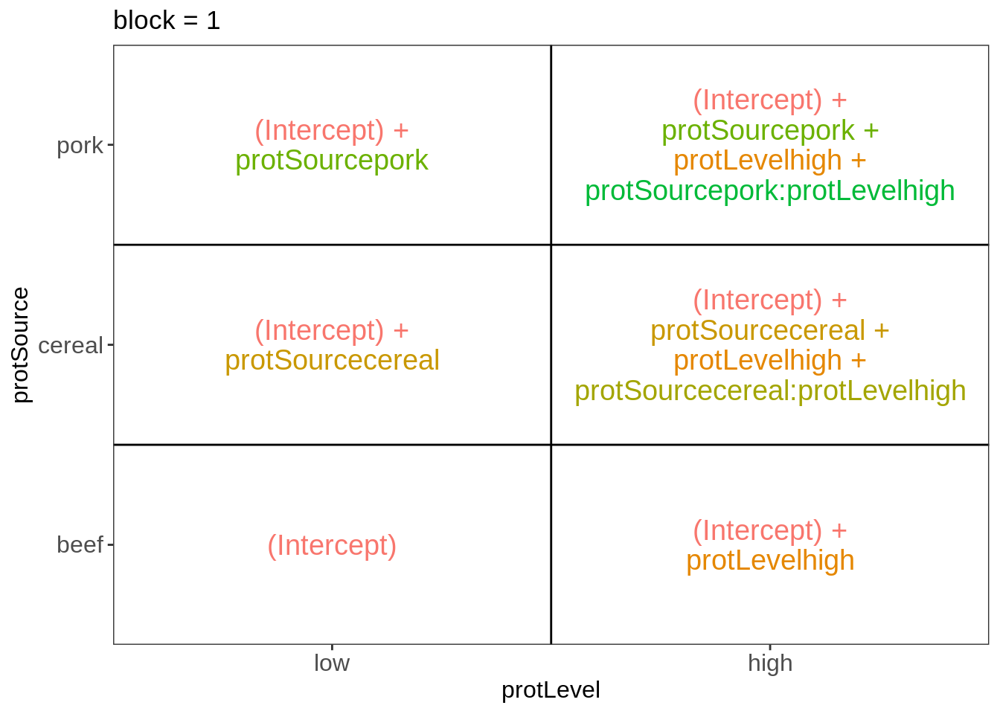
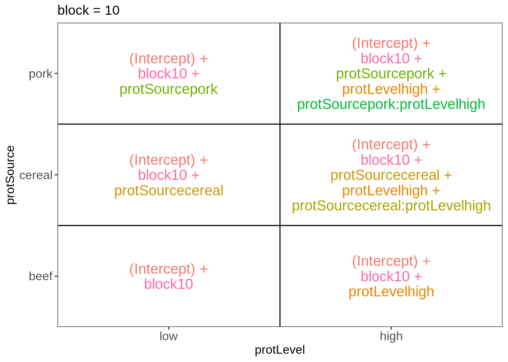
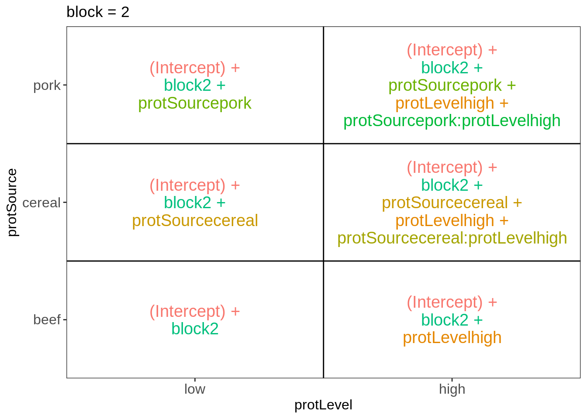
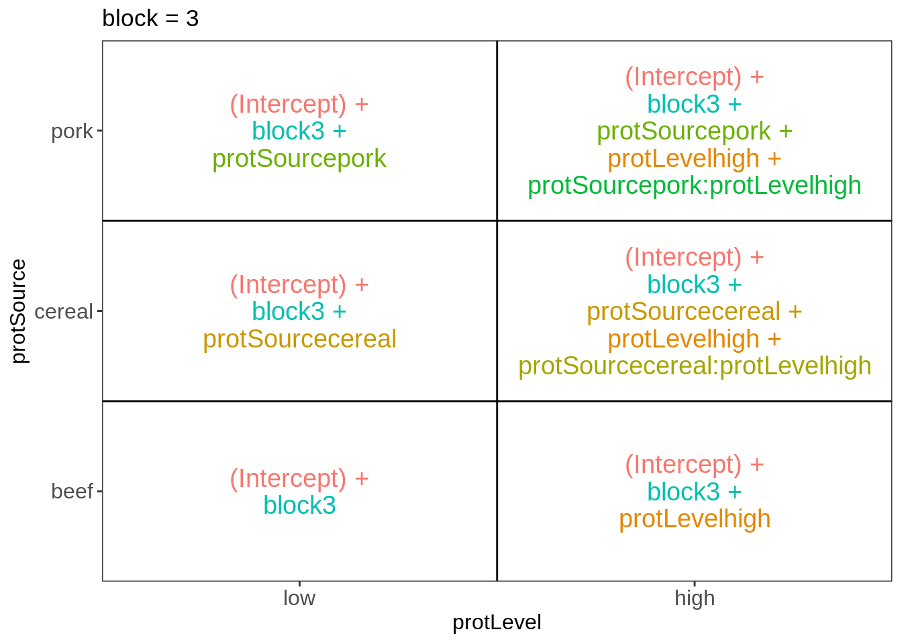
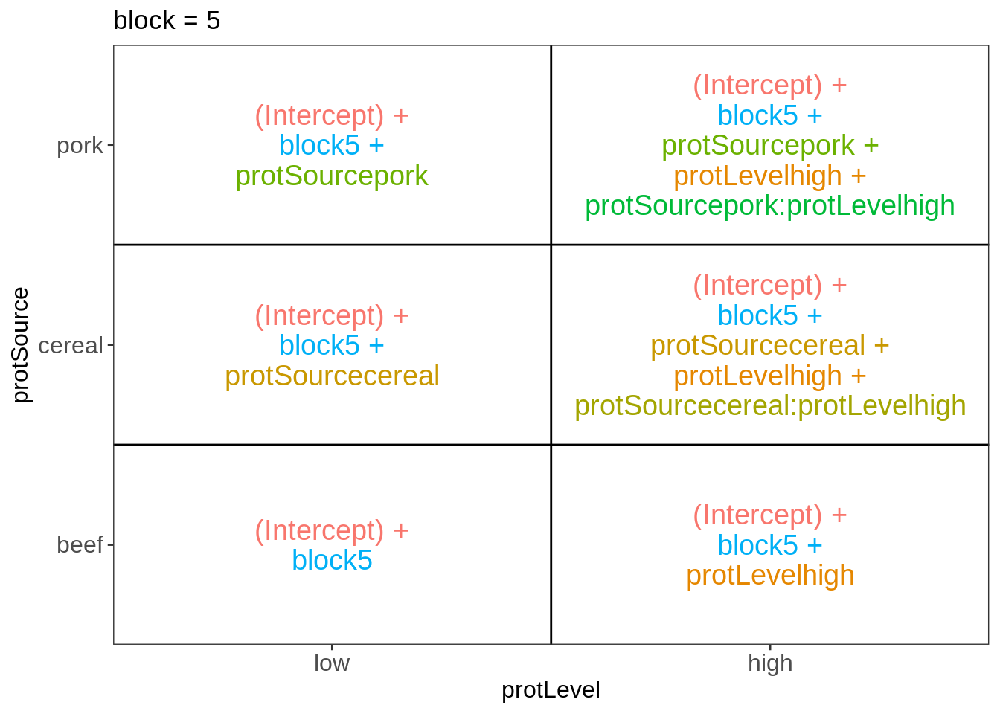
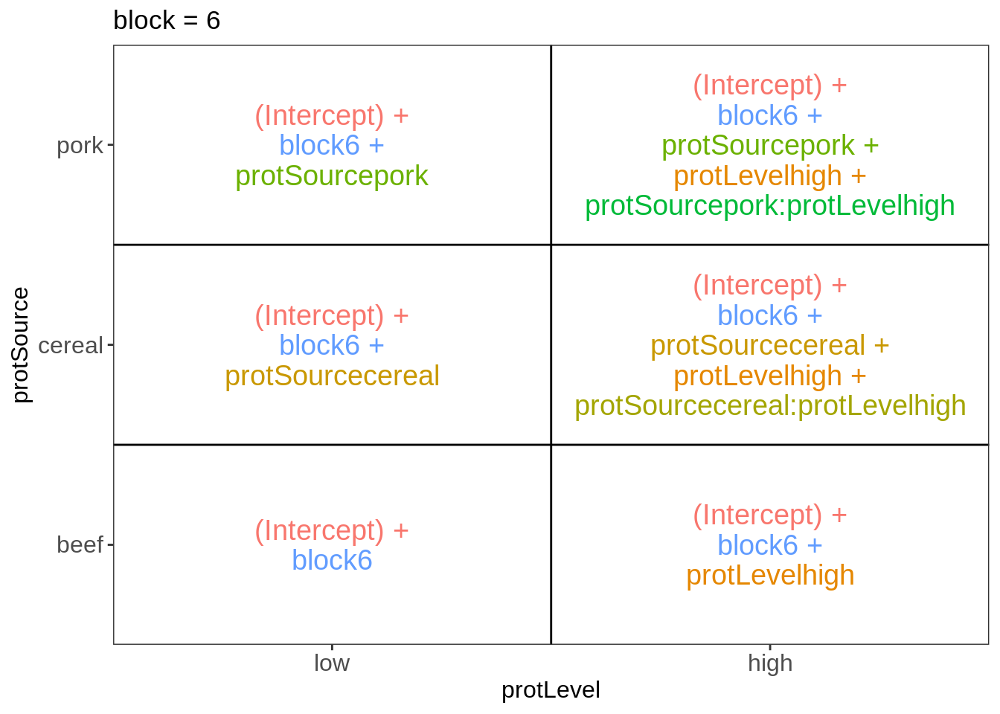
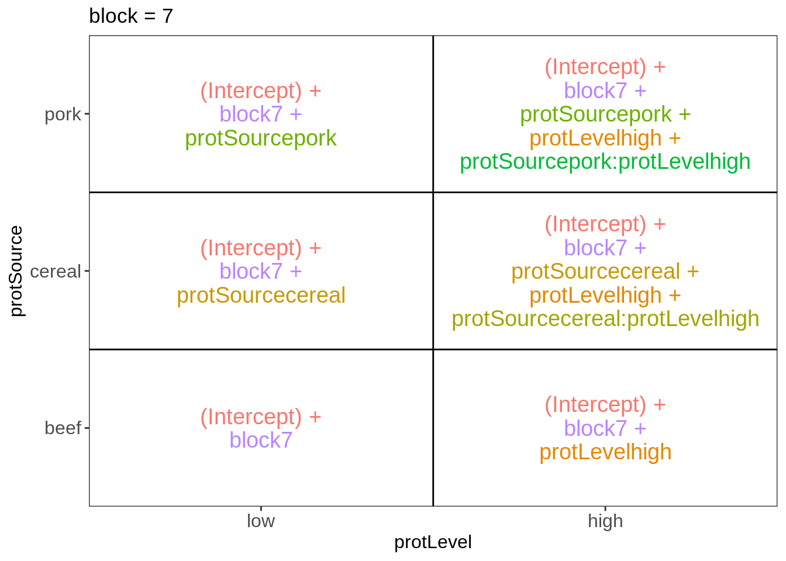
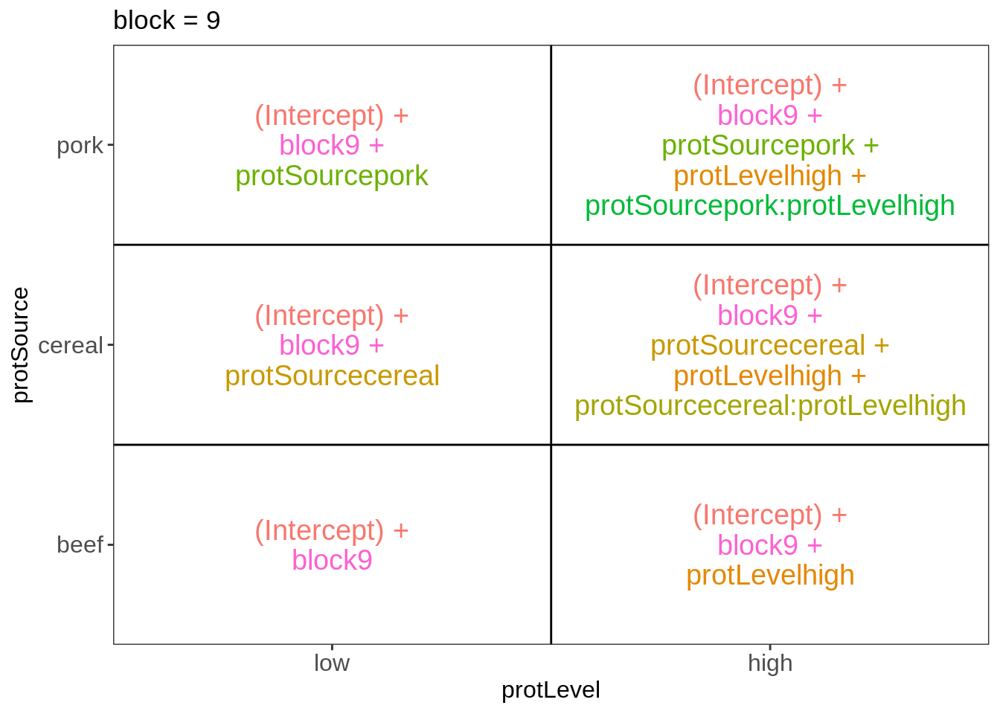

Exercise 8.6: Blocking on the rat diet dataset - solution
Lieven Clement, Jeroen Gilis and Milan Malfait
statOmics, Ghent University (https://statomics.github.io)
1 Background
Researchers are studying the impact of protein sources and protein levels in the diet on the weight of rats. They feed the rats with diets of beef, cereal and pork and use a low and high protein level for each diet type. The researchers can include 60 rats in the experiment. Prior to the experiment, the rats were divided in 10 homogeneous groups of 6 rats based on characteristics such as initial weight, appetite, etc.
Within each group a rat is randomly assigned to a diet. The rats are fed during a month and the weight gain in grams is recorded for each rat.
2 Experimental design
There are three explanatory variables in the experiment: the factor diet type with three levels (beef, cereal and pork), factor protein level with levels (low and high) and a group blocking factor with 10 levels.
There are 6 treatments: beef-high, cereal-high, pork-high, beef-low, cereal-low, pork-low protein.
The rats are the experimental and observational units.
The weight gain is the response variable.
The experiment is a randomized complete block (RCB) design
Load libraries
library(tidyverse)3 Data import
diet <- read.table("https://raw.githubusercontent.com/statOmics/PSLS21/data/dietRats.txt",
header = TRUE
)
head(diet)4 Tidy data
diet <- diet %>%
## Convert categorical levels to factors
mutate(
block = as.factor(block),
protSource = as.factor(protSource),
protLevel = as.factor(protLevel)
) %>%
## Recode factors to make them more verbose
mutate(
protLevel = fct_recode(protLevel, high = "h", low = "l"),
protSource = fct_recode(protSource, beef = "b", cereal = "c", pork = "p")
) %>%
## Set "low" as the reference level for `protLevel`
mutate(protLevel = fct_relevel(protLevel, "low"))
head(diet)5 Data exploration
- Boxplot of the weight gain against protein source, protein level with coloring according to block
diet %>%
ggplot(aes(x = protLevel, y = weightGain)) +
scale_fill_brewer(palette = "RdGy") +
theme_bw() +
geom_boxplot(outlier.shape = NA) +
geom_jitter(aes(color = block)) +
ggtitle("Weight gain dependence on protein source") +
labs(x = "Protein level", y = "Weight gain (g)") +
stat_summary(
fun = mean, geom="point",
shape=5, size=3, color="black"
) +
facet_wrap(vars(protSource))
- Lineplot of the weight gain against protein source, protein level with coloring and grouping according to block
diet %>%
ggplot(aes(x = protLevel, y = weightGain, color = block)) +
scale_fill_brewer(palette = "RdGy") +
theme_bw() +
geom_line(aes(group = block)) +
geom_point() +
ggtitle("Weight gain dependence on protein source") +
ylab("Weight gain (g)") +
facet_wrap(vars(protSource))
An increase in the weight of the rats seems to depend on the protein source received in the diet.
The increase in the weight of the rats seems to depend on the level of protein received in the diet
There also seems to be an interaction effect between the protein level and the protein source on the gain in weight of the rats. For the beef and the pork diets the effect of high protein levels in the data seems to be much stronger than in the cereal diet.
There is also a strong effect of the block. Blocking implies a randomisation restriction, hence, we will have to include the block effect anyway.
6 Multivariate linear regression analysis
6.1 Assumptions
List assumptions:
- The observations are independent
- Linearity between the response and predictor variable
- The residuals of the model must be normally distributed
- Homoscedasticity of the data
The first assumption is met if we correct for block in the model because the rats were randomized to the treatment within block. The other three assumptions can be assessed by fitting the linear model and calling the plot() function as follows.
lm1 <- lm(weightGain ~ block + protSource * protLevel, data = diet)
plot(lm1)


All assumptions are met for this dataset.
6.2 Hypothesis testing
We here fit a linear model with a blocking factor for block and main and interaction effects for protein source and protein level.
summary(lm1)##
## Call:
## lm(formula = weightGain ~ block + protSource * protLevel, data = diet)
##
## Residuals:
## Min 1Q Median 3Q Max
## -21.017 -5.183 -1.017 4.092 18.983
##
## Coefficients:
## Estimate Std. Error t value Pr(>|t|)
## (Intercept) 88.3500 4.1728 21.173 < 2e-16
## block2 -9.1667 4.8183 -1.902 0.063520
## block3 -4.8333 4.8183 -1.003 0.321166
## block4 -20.3333 4.8183 -4.220 0.000117
## block5 -9.3333 4.8183 -1.937 0.059031
## block6 0.6667 4.8183 0.138 0.890572
## block7 -31.3333 4.8183 -6.503 5.58e-08
## block8 -10.1667 4.8183 -2.110 0.040450
## block9 -19.8333 4.8183 -4.116 0.000162
## block10 -0.1667 4.8183 -0.035 0.972559
## protSourcecereal 1.1000 3.7322 0.295 0.769556
## protSourcepork 1.3000 3.7322 0.348 0.729226
## protLevelhigh 20.0000 3.7322 5.359 2.76e-06
## protSourcecereal:protLevelhigh -18.2000 5.2782 -3.448 0.001236
## protSourcepork:protLevelhigh -1.7000 5.2782 -0.322 0.748883
##
## (Intercept) ***
## block2 .
## block3
## block4 ***
## block5 .
## block6
## block7 ***
## block8 *
## block9 ***
## block10
## protSourcecereal
## protSourcepork
## protLevelhigh ***
## protSourcecereal:protLevelhigh **
## protSourcepork:protLevelhigh
## ---
## Signif. codes: 0 '***' 0.001 '**' 0.01 '*' 0.05 '.' 0.1 ' ' 1
##
## Residual standard error: 8.346 on 45 degrees of freedom
## Multiple R-squared: 0.7712, Adjusted R-squared: 0.7
## F-statistic: 10.83 on 14 and 45 DF, p-value: 3.726e-106.3 Interpretation of the regression parameters
library(ExploreModelMatrix)
ExploreModelMatrix::VisualizeDesign(diet, ~ block + protSource * protLevel)$plotlist## $`block = 1`
##
## $`block = 10`
##
## $`block = 2`
##
## $`block = 3`
##
## $`block = 4`##
## $`block = 5`
##
## $`block = 6`
##
## $`block = 7`
##
## $`block = 8`##
## $`block = 9`
There are 3 levels for protein source, 2 levels for protein level and 10 levels for the blocking variable. We will have one reference level for each respective variable: beef, low, block 1. So we need 2, 1 and 9 dummy variables to introduce the factors protein source, protein level and block in the linear model, respectively.
Hence, we can write down the linear model as follows:
\(y_i=\beta_0+\beta_cx_{i,c} +\beta_px_{i,p}+\beta_hx_{i,h}+\beta_{ch}x_{i,c}x_{i,h}+\beta_{ph}x_{i,p}x_{i,h}+\beta_{b2}x_{i,b2}+\ldots+\beta_{b10}x_{i,b10}+\epsilon_{i}\)
with: \(y_i\) the observed weight gain for rat i, \(x_{i,h}\) a dummy variable which is 1 if rat i receives a high protein diet and is 0 otherwise, \(x_{i,c}\) a dummy variable which is 1 if rat i receives a cereal diet and is 0 otherwise, \(x_{i,p}\) a dummy variable which is 1 if rat i receives a pork diet and is 0 otherwise and \(x_{i,bk}\) is a dummy variable which is 1 if rat i belongs to block \(bk\) and is 0 otherwise, with \(k \in 2,\ldots, 10\), and \(\epsilon_i\) an error term which is normally distributed with mean 0 and variance \(\sigma^2\), i.e. \(\epsilon_i \sim N(0,\sigma^2)\).
Rats that are assigned to block \(k\) and receive a beef based low protein diet have a covariate pattern \(x_{i,h}=0\), \(x_{i,c}=0\), \(x_{i,p}=0\), \(x_{i,bm}=0\) with \(m\neq k\) and \(x_{i,bk}=1\). Their mean weight gain is thus equal to \(\mu_{l,b,bk}=\beta_0+\beta_{bk}\)
Rats that are assigned to block \(k\) and receive a beef based high protein diet have a covariate pattern \(x_{i,h}=1\), \(x_{i,c}=0\), \(x_{i,p}=0\), \(x_{i,bm}=0\) with \(m\neq k\) and \(x_{i,bk}=1\). Their mean weight gain is thus equal to \(\mu_{h,b,bk}=\beta_0+\beta_h+\beta_{bk}\)
Rats that are assigned to block \(k\) and receive a cereal based low protein diet have a covariate pattern \(x_{i,h}=0\), \(x_{i,c}=1\), \(x_{i,p}=0\), \(x_{i,bm}=0\) with \(m\neq k\) and \(x_{i,bk}=1\). Their mean weight gain is thus equal to \(\mu_{h,c,bk}=\beta_0+\beta_c+\beta_{bk}\)
Rats that are assigned to block \(k\) and receive a cereal based heigh protein diet have a covariate pattern \(x_{i,h}=1\), \(x_{i,c}=1\), \(x_{i,p}=0\), \(x_{i,bm}=0\) with \(m\neq k\) and \(x_{i,bk}=1\). Their mean weight gain is thus equal to \(\mu_{h,c,bk}=\beta_0+\beta_h+\beta_c+\beta_{ch}+\beta_{bk}\)
Rats that are assigned to block \(k\) and receive a pork based low protein diet have a covariate pattern \(x_{i,h}=0\), \(x_{i,c}=0\), \(x_{i,p}=1\), \(x_{i,bm}=0\) with \(m\neq k\) and \(x_{i,bk}=1\). Their mean weight gain is thus equal to \(\mu_{l,p,bk}=\beta_0+\beta_p+\beta_{bk}\)
Rats that are assigned to block \(k\) and receive a pork based heigh protein diet have a covariate pattern \(x_{i,h}=1\), \(x_{i,c}=0\), \(x_{i,p}=1\), \(x_{i,bm}=0\) with \(m\neq k\) and \(x_{i,bk}=1\). There mean weight gain is thus equal to \(\mu_{h,p,bk}=\beta_0+\beta_h+\beta_p+\beta_{ph}+\beta_{bk}\)
We can now relate this to the output of the lm function:
The intercept \(\beta_0\) is thus the average weight increase in the low beef diet for rats in block 1.
The parameter \(\beta_c\): the average difference in weight gain between cereal-low and beef-low diet is 1.1g.
The parameter \(\beta_p\): the average difference in weight gain between pork-low and beef-low diet is 1.3g.
The parameter \(\beta_h\): the average difference in weight gain between beef-high and beef-Low diet is 20g.
The parameter \(\beta_{ch}\) is the difference in the average weight gain difference due to the high protein level as compared to the low protein level for cereal diets as compared to the weight gain difference that occurs due to the protein level in the reference class (here beef diet). Here this is negative, i.e. -18.2g, thus the weight gain for the cereal protein source increases on average less between high and low protein diets than in beef based diets.
The parameter \(\beta_{ph}\) is the difference in the average weight gain difference due to the high protein level as compared to the low protein level for pork diets as compared to the weight gain difference that occurs due to the protein level in the reference class (here beef diet). Here this is negative, i.e. -1.7g, thus the weight gain for the proc protein source increases on average less between high and low protein diets than in beef based diets.
6.4 Testing the overall (combined) effect of diet
Because there are multiple factors with different levels in the model, we can first assess the effect of the diet (protein Level, protein source and the interaction) by using anova. With this test we will assess the null hypothesis that the average weight gain in each treatment is equal: i.e. \(H_0: \mu_{b,l}=\mu_{b,h}=\mu_{c,h}=\mu_{c,l}=\mu_{p,h}=\mu_{p,h}\) versus the alternative hyptohesis \(H_1:\) that at least two treatment means are different.
lm0 <- lm(weightGain ~ block, data = diet)
anova(lm0, lm1)We can conclude that there is an extremely significant effect of the diet type (protein source and/or protein level and/or protein source-protein level interaction) on the weight gain of rats (p << 0.001).
6.5 Assessing the interaction effect between protein source and protein level
library(car)
Anova(lm1, type = "III")There is a very significant interaction between the protein source and the protein level (p = 2e-03). This indicates that the average weight increase due to the protein level differs according to the protein source. Hence, we cannot assess the effect of the protein source and/or protein level independently because there effects of the protein source vary according to the protein level.
6.6 Assessing specific contrasts
Imagine that we are interested in assessing if there is an effect of
- protein source in the low protein diets
- \(\mu_{c,l}-\mu_{b,l} = \beta_c\)
- \(\mu_{p,l}-\mu_{b,l} = \beta_p\)
- \(\mu_{c,l}-\mu_{p,l}= \beta_c-\beta_p\))
- protein source in high protein diets
- \(\mu_{c,h}-\mu_{b,h}=\beta_c+\beta_{ch}\)
- \(\mu_{p,h}-\mu_{b,h}=\beta_p+\beta_{ph}\)
- \(\mu_{p,h}-\mu_{c,h}=(\beta_c+\beta_{ch})-(\beta_p+\beta_{ph})\)
- protein level for
- beef diets (\(\mu_{b,h}-\mu_{b,l}=\beta_h\)),
- cereal diets (\(\mu_{c,h}-\mu_{c,l}=\beta_h+\beta_{ch}\)) and
- pork diets (\(\mu_{p,h}-\mu_{p,l}=\beta_h+\beta_{ph}\)).
- If the effect of the protein level differs between
- beef and cereal \((\mu_{c,h}-\mu_{c,l}) - (\mu_{b,h}-\mu_{b,l})=\beta_{ch}\)
- beef and pork \((\mu_{p,h}-\mu_{p,l}) - (\mu_{c,h}-\mu_{c,l})=\beta_{ph}\) and
- cereal and pork diets \((\mu_{c,h}-\mu_{c,l}) - (\mu_{p,h}-\mu_{p,l})=\beta_{ch}-\beta_{ph}\).
These effects of interest are so-called contrasts, i.e. linear combinations of the parameters.
We can define the contrasts and assess the significance of the contrasts with the code below. The contrasts are given as input in the form of symbolic descriptions to the linfct argument of the glht function.
library(multcomp)
set.seed(75468) # to get reproducible results (small effect if removed)
lm1MultComp <- glht(
model = lm1,
linfct = c(
"protSourcecereal = 0",
"protSourcepork = 0",
"protSourcecereal- protSourcepork = 0",
"protSourcecereal + protSourcecereal:protLevelhigh = 0",
"protSourcepork + protSourcepork:protLevelhigh = 0",
"(protSourcecereal + protSourcecereal:protLevelhigh) - (protSourcepork + protSourcepork:protLevelhigh) = 0",
"protLevelhigh = 0",
"protLevelhigh + protSourcecereal:protLevelhigh = 0",
"protLevelhigh + protSourcepork:protLevelhigh = 0",
"protSourcecereal:protLevelhigh = 0",
"protSourcepork:protLevelhigh = 0",
"protSourcecereal:protLevelhigh - protSourcepork:protLevelhigh = 0"
)
)summary(lm1MultComp)##
## Simultaneous Tests for General Linear Hypotheses
##
## Fit: lm(formula = weightGain ~ block + protSource * protLevel, data = diet)
##
## Linear Hypotheses:
## Estimate
## protSourcecereal == 0 1.100
## protSourcepork == 0 1.300
## protSourcecereal - protSourcepork == 0 -0.200
## protSourcecereal + protSourcecereal:protLevelhigh == 0 -17.100
## protSourcepork + protSourcepork:protLevelhigh == 0 -0.400
## (protSourcecereal + protSourcecereal:protLevelhigh) - (protSourcepork + protSourcepork:protLevelhigh) == 0 -16.700
## protLevelhigh == 0 20.000
## protLevelhigh + protSourcecereal:protLevelhigh == 0 1.800
## protLevelhigh + protSourcepork:protLevelhigh == 0 18.300
## protSourcecereal:protLevelhigh == 0 -18.200
## protSourcepork:protLevelhigh == 0 -1.700
## protSourcecereal:protLevelhigh - protSourcepork:protLevelhigh == 0 -16.500
## Std. Error
## protSourcecereal == 0 3.732
## protSourcepork == 0 3.732
## protSourcecereal - protSourcepork == 0 3.732
## protSourcecereal + protSourcecereal:protLevelhigh == 0 3.732
## protSourcepork + protSourcepork:protLevelhigh == 0 3.732
## (protSourcecereal + protSourcecereal:protLevelhigh) - (protSourcepork + protSourcepork:protLevelhigh) == 0 3.732
## protLevelhigh == 0 3.732
## protLevelhigh + protSourcecereal:protLevelhigh == 0 3.732
## protLevelhigh + protSourcepork:protLevelhigh == 0 3.732
## protSourcecereal:protLevelhigh == 0 5.278
## protSourcepork:protLevelhigh == 0 5.278
## protSourcecereal:protLevelhigh - protSourcepork:protLevelhigh == 0 5.278
## t value
## protSourcecereal == 0 0.295
## protSourcepork == 0 0.348
## protSourcecereal - protSourcepork == 0 -0.054
## protSourcecereal + protSourcecereal:protLevelhigh == 0 -4.582
## protSourcepork + protSourcepork:protLevelhigh == 0 -0.107
## (protSourcecereal + protSourcecereal:protLevelhigh) - (protSourcepork + protSourcepork:protLevelhigh) == 0 -4.475
## protLevelhigh == 0 5.359
## protLevelhigh + protSourcecereal:protLevelhigh == 0 0.482
## protLevelhigh + protSourcepork:protLevelhigh == 0 4.903
## protSourcecereal:protLevelhigh == 0 -3.448
## protSourcepork:protLevelhigh == 0 -0.322
## protSourcecereal:protLevelhigh - protSourcepork:protLevelhigh == 0 -3.126
## Pr(>|t|)
## protSourcecereal == 0 0.9995
## protSourcepork == 0 0.9989
## protSourcecereal - protSourcepork == 0 1.0000
## protSourcecereal + protSourcecereal:protLevelhigh == 0 <0.001
## protSourcepork + protSourcepork:protLevelhigh == 0 1.0000
## (protSourcecereal + protSourcecereal:protLevelhigh) - (protSourcepork + protSourcepork:protLevelhigh) == 0 <0.001
## protLevelhigh == 0 <0.001
## protLevelhigh + protSourcecereal:protLevelhigh == 0 0.9949
## protLevelhigh + protSourcepork:protLevelhigh == 0 <0.001
## protSourcecereal:protLevelhigh == 0 0.0118
## protSourcepork:protLevelhigh == 0 0.9993
## protSourcecereal:protLevelhigh - protSourcepork:protLevelhigh == 0 0.0265
##
## protSourcecereal == 0
## protSourcepork == 0
## protSourcecereal - protSourcepork == 0
## protSourcecereal + protSourcecereal:protLevelhigh == 0 ***
## protSourcepork + protSourcepork:protLevelhigh == 0
## (protSourcecereal + protSourcecereal:protLevelhigh) - (protSourcepork + protSourcepork:protLevelhigh) == 0 ***
## protLevelhigh == 0 ***
## protLevelhigh + protSourcecereal:protLevelhigh == 0
## protLevelhigh + protSourcepork:protLevelhigh == 0 ***
## protSourcecereal:protLevelhigh == 0 *
## protSourcepork:protLevelhigh == 0
## protSourcecereal:protLevelhigh - protSourcepork:protLevelhigh == 0 *
## ---
## Signif. codes: 0 '***' 0.001 '**' 0.01 '*' 0.05 '.' 0.1 ' ' 1
## (Adjusted p values reported -- single-step method)confint(lm1MultComp)##
## Simultaneous Confidence Intervals
##
## Fit: lm(formula = weightGain ~ block + protSource * protLevel, data = diet)
##
## Quantile = 2.8765
## 95% family-wise confidence level
##
##
## Linear Hypotheses:
## Estimate
## protSourcecereal == 0 1.1000
## protSourcepork == 0 1.3000
## protSourcecereal - protSourcepork == 0 -0.2000
## protSourcecereal + protSourcecereal:protLevelhigh == 0 -17.1000
## protSourcepork + protSourcepork:protLevelhigh == 0 -0.4000
## (protSourcecereal + protSourcecereal:protLevelhigh) - (protSourcepork + protSourcepork:protLevelhigh) == 0 -16.7000
## protLevelhigh == 0 20.0000
## protLevelhigh + protSourcecereal:protLevelhigh == 0 1.8000
## protLevelhigh + protSourcepork:protLevelhigh == 0 18.3000
## protSourcecereal:protLevelhigh == 0 -18.2000
## protSourcepork:protLevelhigh == 0 -1.7000
## protSourcecereal:protLevelhigh - protSourcepork:protLevelhigh == 0 -16.5000
## lwr
## protSourcecereal == 0 -9.6358
## protSourcepork == 0 -9.4358
## protSourcecereal - protSourcepork == 0 -10.9358
## protSourcecereal + protSourcecereal:protLevelhigh == 0 -27.8358
## protSourcepork + protSourcepork:protLevelhigh == 0 -11.1358
## (protSourcecereal + protSourcecereal:protLevelhigh) - (protSourcepork + protSourcepork:protLevelhigh) == 0 -27.4358
## protLevelhigh == 0 9.2642
## protLevelhigh + protSourcecereal:protLevelhigh == 0 -8.9358
## protLevelhigh + protSourcepork:protLevelhigh == 0 7.5642
## protSourcecereal:protLevelhigh == 0 -33.3827
## protSourcepork:protLevelhigh == 0 -16.8827
## protSourcecereal:protLevelhigh - protSourcepork:protLevelhigh == 0 -31.6827
## upr
## protSourcecereal == 0 11.8358
## protSourcepork == 0 12.0358
## protSourcecereal - protSourcepork == 0 10.5358
## protSourcecereal + protSourcecereal:protLevelhigh == 0 -6.3642
## protSourcepork + protSourcepork:protLevelhigh == 0 10.3358
## (protSourcecereal + protSourcecereal:protLevelhigh) - (protSourcepork + protSourcepork:protLevelhigh) == 0 -5.9642
## protLevelhigh == 0 30.7358
## protLevelhigh + protSourcecereal:protLevelhigh == 0 12.5358
## protLevelhigh + protSourcepork:protLevelhigh == 0 29.0358
## protSourcecereal:protLevelhigh == 0 -3.0173
## protSourcepork:protLevelhigh == 0 13.4827
## protSourcecereal:protLevelhigh - protSourcepork:protLevelhigh == 0 -1.3173Note that the p-values and the confidence intervals are automatically corrected for multiple testing.
7 Conclusion
There is an extremely significant effect of the type of protein diet on the weight gain of rats (p<<1e-6). The interaction between protein type and protein source is also very significant (p=0.0019).
The average weight gain does not vary significantly according to protein source in the diets with low protein levels (all p>0.99).
The weight gain in the cereal diet at high protein concentration is on average 17.1g and 16.7g g lower than in the high protein beef and pork diet, respectively (95% CI [6.4, 27.8] and [6, 27.4]) and the differences are extremely significant (p<0.001). The average weight gains after meat based diets at high protein levels, however, do not differ significantly (p>0.99).
We also discovered an extremely significant difference in weight gain according to the protein level for beef and pork based diets (p<0.001). The weight gain on average increases with 20g and 18.3g in the high protein level as compared to the low protein beef and pork diet, respectively (95%CI [9.3, 30.7] and [7.6, 29]). The protein level effect is not significant for the cereal diet (p>0.99).
Finally significant interactions between protein level and protein source were found (p<0.05), i.e. the increase in weight gain due to protein level in cereal based diets was 18.2g and 16.5g lower than that of beef and pork based diets, respectively (95% CI [3g,33.4g] and [1.3g,31.7g]). The average difference in increase in weight gain due to protein level among the meat based diets was not significant (p>0.99).
All reported p-values and confidence intervals were corrected for multiple testing